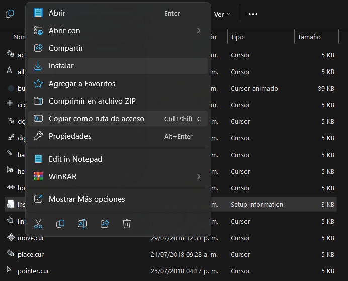
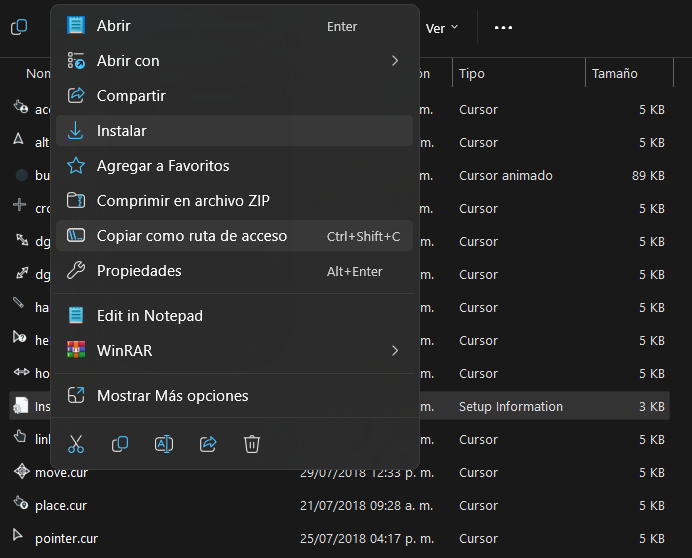

Información
Un Nuevo Cursor Elegante y Sencillo para Salir del Viejo Mouse Predeterminado de Windows, si te Interesa Aqui Estan los Pasos para Tenerlo.
-
Pasos a Seguir:
- Primero Descarga los Archivos, y Extrae, Luego Busca el Archivo Llamado "install.inf".
- Dale Click Derecho al Archivo Llamado "install.inf" Luego Dale a "Instalar".
- Ahora Solo ve a "Panel de Control > Mouse > Punteros" y lo Seleccionas.
 
